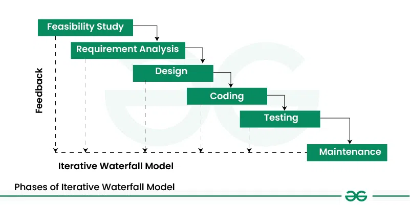

Giới Thiệu Công Nghệ Phần Mềm Agile#
Công nghệ phần mềm là một lĩnh vực quan trọng trong ngành công nghệ thông tin, tập trung vào việc phát triển, duy trì và quản lý các hệ thống phần mềm. Dưới đây là các mốc thời gian quan trọng trong lịch sử của công nghệ phần mềm và các phương pháp tương ứng:
Các Mốc Thời Gian Quan Trọng#
1950s: Sự ra đời của máy tính điện tử và các ngôn ngữ lập trình đầu tiên như Fortran và COBOL.
1960s: Khái niệm về kỹ nghệ phần mềm bắt đầu hình thành, với sự xuất hiện của các phương pháp phát triển phần mềm có cấu trúc.
1970s: Mô hình thác nước (Waterfall) được giới thiệu, đánh dấu một bước tiến quan trọng trong việc quản lý dự án phần mềm.
1980s: Sự phát triển của các phương pháp hướng đối tượng (Object-Oriented) và ngôn ngữ lập trình như C++.
1990s: Sự ra đời của các phương pháp phát triển phần mềm linh hoạt (Agile) và các khung làm việc như Scrum và Extreme Programming (XP).
2000s: Sự phổ biến của DevOps, kết hợp phát triển phần mềm và vận hành hệ thống để tăng cường hiệu quả và tốc độ triển khai.
2010s: Sự xuất hiện của các công nghệ mới như trí tuệ nhân tạo (AI), học máy (Machine Learning) và phát triển phần mềm dựa trên đám mây (Cloud Computing).
Các Phương Pháp Phát Triển Phần Mềm#
Phương pháp có cấu trúc: Tập trung vào việc phân chia hệ thống thành các module nhỏ hơn và dễ quản lý.
Mô hình thác nước: Một quy trình tuần tự, trong đó mỗi giai đoạn phải hoàn thành trước khi chuyển sang giai đoạn tiếp theo.
Phương pháp hướng đối tượng: Tập trung vào việc sử dụng các đối tượng để mô hình hóa các thực thể trong hệ thống.
Phương pháp Agile: Linh hoạt, tập trung vào sự hợp tác và phản hồi nhanh chóng, phát triển phần mềm theo từng giai đoạn ngắn.
DevOps: Kết hợp phát triển phần mềm và vận hành hệ thống, nhằm tăng cường hiệu quả và tốc độ triển khai.
1. Quy Trình Phát Triển Phần Mềm#
Quy trình phát triển phần mềm là một tập hợp các hoạt động và nhiệm vụ có cấu trúc nhằm tạo ra một sản phẩm phần mềm hoàn chỉnh. Quy trình này thường bao gồm các giai đoạn chính sau:
Thu thập yêu cầu: Xác định và ghi nhận các yêu cầu của khách hàng và người dùng cuối. Đây là bước quan trọng để đảm bảo rằng phần mềm phát triển đáp ứng đúng nhu cầu và mong đợi của người dùng.
Phân tích yêu cầu: Phân tích các yêu cầu đã thu thập để hiểu rõ hơn về chức năng và phi chức năng của hệ thống. Từ đó, tạo ra các tài liệu yêu cầu chi tiết.
Thiết kế hệ thống: Xây dựng kiến trúc và thiết kế chi tiết cho hệ thống phần mềm. Giai đoạn này bao gồm việc thiết kế giao diện người dùng, cơ sở dữ liệu, và các thành phần khác của hệ thống.
Lập trình: Viết mã nguồn để hiện thực hóa các thiết kế đã được phê duyệt. Đây là giai đoạn mà các lập trình viên sẽ tạo ra các module và chức năng của phần mềm.
Kiểm thử: Thực hiện các hoạt động kiểm thử để đảm bảo rằng phần mềm hoạt động đúng như mong đợi và không có lỗi. Các loại kiểm thử bao gồm kiểm thử đơn vị, kiểm thử tích hợp, kiểm thử hệ thống và kiểm thử chấp nhận.
Triển khai: Cài đặt và cấu hình phần mềm trong môi trường thực tế, chuẩn bị cho việc sử dụng bởi người dùng cuối. Giai đoạn này cũng bao gồm việc đào tạo người dùng và cung cấp tài liệu hướng dẫn.
Bảo trì: Sau khi phần mềm được triển khai, cần thực hiện các hoạt động bảo trì để sửa lỗi, cập nhật và nâng cấp phần mềm theo thời gian.
Quy trình phát triển phần mềm có thể được thực hiện theo nhiều mô hình khác nhau, như mô hình thác nước, mô hình Agile, hoặc mô hình DevOps, tùy thuộc vào yêu cầu và đặc điểm của từng dự án.
2. Mô Hình Thác Nước#

Mô hình thác nước (Waterfall) là một quy trình phát triển phần mềm tuần tự, trong đó mỗi giai đoạn phải hoàn thành trước khi chuyển sang giai đoạn tiếp theo. Đây là một trong những mô hình phát triển phần mềm đầu tiên và được sử dụng rộng rãi trong những năm 1970 và 1980.
Ưu Điểm#
Dễ hiểu và dễ quản lý: Mô hình thác nước có cấu trúc rõ ràng và dễ theo dõi, giúp quản lý dự án dễ dàng hơn.
Tài liệu đầy đủ: Mỗi giai đoạn đều yêu cầu tài liệu chi tiết, giúp đảm bảo rằng tất cả các yêu cầu và thiết kế đều được ghi nhận và phê duyệt trước khi tiến hành.
Phù hợp với các dự án nhỏ: Đối với các dự án nhỏ và có yêu cầu rõ ràng, mô hình thác nước có thể là một lựa chọn hiệu quả.
Khuyết Điểm#
Thiếu linh hoạt: Mô hình thác nước không cho phép quay lại các giai đoạn trước đó, điều này có thể gây khó khăn nếu có sự thay đổi yêu cầu hoặc phát hiện lỗi trong các giai đoạn sau.
Khó khăn trong việc thích ứng với thay đổi: Do tính tuần tự của mô hình, việc thay đổi yêu cầu hoặc thiết kế trong quá trình phát triển có thể rất tốn kém và mất thời gian.
Không phù hợp với các dự án lớn và phức tạp: Đối với các dự án lớn và có yêu cầu phức tạp, mô hình thác nước có thể không đáp ứng được sự linh hoạt và tốc độ cần thiết.
Mặc dù mô hình thác nước có những hạn chế, nhưng nó vẫn là một phương pháp phát triển phần mềm quan trọng và có thể được sử dụng hiệu quả trong các dự án có yêu cầu rõ ràng và ít thay đổi.
3. Sự Ra Đời Của Agile#
Nhu Cầu Về Một Phương Pháp Linh Hoạt Hơn#
Trong những năm 1990, các phương pháp phát triển phần mềm truyền thống như mô hình thác nước đã bộc lộ nhiều hạn chế, đặc biệt là trong việc thích ứng với các thay đổi yêu cầu và môi trường phát triển nhanh chóng. Điều này đã tạo ra nhu cầu về một phương pháp linh hoạt hơn, có khả năng phản ứng nhanh chóng với các thay đổi và cải tiến liên tục.
Tập Trung Vào Sự Hợp Tác Và Phản Hồi Nhanh Chóng#
Agile ra đời với mục tiêu tăng cường sự hợp tác giữa các thành viên trong nhóm phát triển và khách hàng. Thay vì tuân theo một kế hoạch cứng nhắc, Agile khuyến khích sự tương tác liên tục và phản hồi nhanh chóng từ khách hàng, giúp đảm bảo rằng sản phẩm cuối cùng đáp ứng đúng nhu cầu và mong đợi của người dùng.
Phát Triển Phần Mềm Theo Từng Giai Đoạn Ngắn (Iterations)#
Một trong những đặc điểm nổi bật của Agile là phát triển phần mềm theo từng giai đoạn ngắn, gọi là iterations hoặc sprints. Mỗi giai đoạn thường kéo dài từ 1 đến 4 tuần và kết thúc bằng một phiên bản phần mềm có thể chạy được. Điều này cho phép nhóm phát triển liên tục cải tiến và điều chỉnh sản phẩm dựa trên phản hồi thực tế, đồng thời giảm thiểu rủi ro và tăng cường khả năng đáp ứng với các thay đổi.
Agile Manifesto#
Agile Manifesto, được công bố vào năm 2001 bởi một nhóm các chuyên gia phát triển phần mềm, là nền tảng của phương pháp Agile. Manifesto này bao gồm bốn giá trị cốt lõi và mười hai nguyên tắc, nhằm hướng dẫn các nhóm phát triển phần mềm làm việc hiệu quả hơn và đáp ứng tốt hơn nhu cầu của khách hàng.
Bốn Giá Trị Cốt Lõi#
 (Source: LogRocket Blog)
(Source: LogRocket Blog)
Cá nhân và sự tương tác hơn là quy trình và công cụ: Đặt con người và sự giao tiếp lên hàng đầu, vì họ là yếu tố quyết định sự thành công của dự án.
Phần mềm chạy tốt hơn là tài liệu đầy đủ: Ưu tiên việc tạo ra phần mềm hoạt động, thay vì tập trung quá nhiều vào việc viết tài liệu chi tiết.
Hợp tác với khách hàng hơn là đàm phán hợp đồng: Khuyến khích sự hợp tác liên tục với khách hàng để đảm bảo sản phẩm cuối cùng đáp ứng đúng nhu cầu của họ.
Phản hồi với thay đổi hơn là bám sát kế hoạch: Linh hoạt và sẵn sàng thay đổi kế hoạch khi cần thiết để đáp ứng các yêu cầu mới hoặc thay đổi từ khách hàng.
Mười Hai Nguyên Tắc#

Ưu tiên cao nhất là thỏa mãn khách hàng thông qua việc giao phần mềm có giá trị sớm và liên tục.
Chào đón các thay đổi yêu cầu, ngay cả ở giai đoạn muộn của phát triển.
Giao phần mềm chạy được thường xuyên, từ vài tuần đến vài tháng, với ưu tiên thời gian ngắn hơn.
Các nhà kinh doanh và nhà phát triển phải làm việc cùng nhau hàng ngày trong suốt dự án.
Xây dựng các dự án xung quanh các cá nhân có động lực.
Phương pháp hiệu quả nhất để truyền đạt thông tin là trao đổi trực tiếp.
Phần mềm chạy được là thước đo chính của tiến độ.
Agile thúc đẩy phát triển bền vững.
Liên tục chú ý đến sự xuất sắc về kỹ thuật và thiết kế tốt.
Sự đơn giản là cần thiết.
Các kiến trúc, yêu cầu và thiết kế tốt nhất xuất phát từ các nhóm tự tổ chức.
Nhóm phản ánh về cách trở nên hiệu quả hơn, sau đó điều chỉnh và thay đổi hành vi cho phù hợp.
Agile Manifesto đã tạo ra một cuộc cách mạng trong cách tiếp cận phát triển phần mềm, giúp các nhóm làm việc hiệu quả hơn và tạo ra các sản phẩm chất lượng cao hơn.
Tính Lặp Và Tăng Trưởng Trong Agile#
Agile sử dụng các chu kỳ phát triển ngắn, gọi là iterations hoặc sprints, để liên tục cải tiến và phát triển phần mềm. Mỗi iteration thường kéo dài từ 1 đến 4 tuần và kết thúc bằng một phiên bản phần mềm có thể chạy được. Điều này cho phép nhóm phát triển nhận được phản hồi nhanh chóng từ khách hàng và điều chỉnh sản phẩm theo nhu cầu thực tế.
Lợi Ích Của Tính Lặp#
Phản hồi nhanh chóng: Mỗi iteration cung cấp một cơ hội để nhận phản hồi từ khách hàng và người dùng, giúp nhóm phát triển điều chỉnh sản phẩm kịp thời.
Giảm thiểu rủi ro: Bằng cách phát triển phần mềm theo từng giai đoạn ngắn, nhóm có thể phát hiện và giải quyết các vấn đề sớm hơn, giảm thiểu rủi ro cho dự án.
Tăng cường sự linh hoạt: Agile cho phép nhóm phát triển dễ dàng thích ứng với các thay đổi yêu cầu và môi trường, đảm bảo rằng sản phẩm cuối cùng đáp ứng đúng nhu cầu của khách hàng.
Tăng Trưởng Liên Tục#
Cải tiến liên tục: Agile khuyến khích sự cải tiến liên tục thông qua các cuộc họp đánh giá sau mỗi iteration, nơi nhóm thảo luận về những gì đã làm tốt và những gì cần cải thiện.
Phát triển bền vững: Agile thúc đẩy một tốc độ phát triển bền vững, giúp nhóm duy trì năng suất và chất lượng cao trong suốt dự án.
Tính lặp và tăng trưởng trong Agile giúp đảm bảo rằng phần mềm được phát triển một cách linh hoạt, hiệu quả và đáp ứng tốt nhất nhu cầu của khách hàng.
4. So Sánh Agile và Waterfall#
 (Source: Craft Silicon)
(Source: Craft Silicon)
Agile#
Linh hoạt và thích ứng: Agile cho phép thay đổi yêu cầu ngay cả ở giai đoạn muộn của dự án, giúp nhóm phát triển dễ dàng thích ứng với các thay đổi.
Phát triển theo từng giai đoạn ngắn: Sản phẩm được phát triển và giao hàng theo từng giai đoạn ngắn (iterations), giúp nhận phản hồi nhanh chóng và cải tiến liên tục.
Tập trung vào sự hợp tác: Agile khuyến khích sự hợp tác liên tục giữa các thành viên trong nhóm và khách hàng, đảm bảo rằng sản phẩm cuối cùng đáp ứng đúng nhu cầu của người dùng.
Phản hồi nhanh chóng: Nhận phản hồi từ khách hàng sau mỗi iteration, giúp điều chỉnh sản phẩm kịp thời.
Phát triển bền vững: Agile thúc đẩy một tốc độ phát triển bền vững, giúp duy trì năng suất và chất lượng cao.
Waterfall#
Quy trình tuần tự: Waterfall là một quy trình phát triển phần mềm tuần tự, trong đó mỗi giai đoạn phải hoàn thành trước khi chuyển sang giai đoạn tiếp theo.
Yêu cầu rõ ràng từ đầu: Tất cả các yêu cầu và thiết kế phải được xác định và phê duyệt trước khi bắt đầu phát triển, giúp đảm bảo rằng không có thay đổi lớn trong quá trình phát triển.
Tài liệu chi tiết: Mỗi giai đoạn đều yêu cầu tài liệu chi tiết, giúp đảm bảo rằng tất cả các yêu cầu và thiết kế đều được ghi nhận và phê duyệt trước khi tiến hành.
Dễ quản lý: Mô hình thác nước có cấu trúc rõ ràng và dễ theo dõi, giúp quản lý dự án dễ dàng hơn.
Không linh hoạt: Waterfall không cho phép quay lại các giai đoạn trước đó, điều này có thể gây khó khăn nếu có sự thay đổi yêu cầu hoặc phát hiện lỗi trong các giai đoạn sau.
Bảng So Sánh#
Tiêu Chí |
Agile |
Waterfall |
|---|---|---|
Linh hoạt |
Cao, dễ thích ứng với thay đổi |
Thấp, khó thay đổi sau khi đã bắt đầu |
Phát triển |
Theo từng giai đoạn ngắn (iterations) |
Tuần tự, từng giai đoạn hoàn thành trước |
Hợp tác |
Liên tục với khách hàng và nhóm phát triển |
Ít hơn, tập trung vào tài liệu và quy trình |
Phản hồi |
Nhanh chóng sau mỗi iteration |
Chậm, chỉ sau khi hoàn thành dự án |
Quản lý |
Linh hoạt, yêu cầu quản lý liên tục |
Dễ quản lý với cấu trúc rõ ràng |
Tài liệu |
Tập trung vào phần mềm chạy được |
Tài liệu chi tiết cho mỗi giai đoạn |
Agile và Waterfall đều có những ưu điểm và hạn chế riêng, và việc lựa chọn phương pháp nào phụ thuộc vào yêu cầu và đặc điểm của từng dự án. Agile phù hợp với các dự án cần sự linh hoạt và phản hồi nhanh chóng, trong khi Waterfall phù hợp với các dự án có yêu cầu rõ ràng và ít thay đổi.
 (Source: Henny Portman)
(Source: Henny Portman)